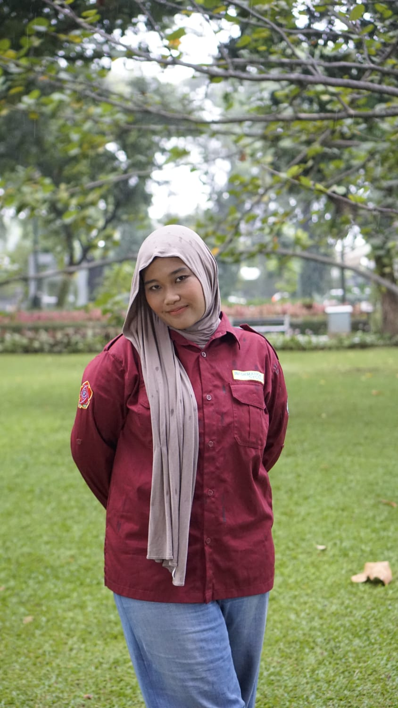

Pendidikan
2023 - 2027
S1 Sistem Informasi
Universitas Nasional
2020 - 2023
Ilmu Pengetahuan Sosial
SMA Negeri 51 Jakarta

Saya adalah kreator multidisiplin yang berfokus pada desain visual, struktur informasi, dan pengalaman pengguna yang rapi. Saya percaya desain yang baik tidak perlu berlebihan; yang penting adalah jelas, relevan, dan memberi nilai nyata bagi pengguna.
Berangkat dari ketertarikan pada detail dan komunikasi visual, saya membangun antarmuka digital yang menyeimbangkan estetika dan fungsi, sehingga setiap elemen memiliki tujuan yang terukur.
Saya percaya pada pendekatan desain yang terarah: jika elemen tidak membantu tujuan pengguna, maka elemen tersebut perlu disederhanakan atau dihapus. Fokus saya adalah menghadirkan antarmuka yang terasa ringan, jelas, dan efektif.